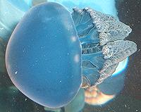
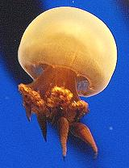
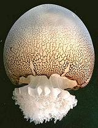
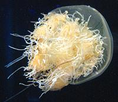
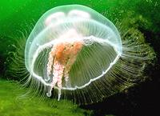

SAFARI
Users
- Working with Jellyfish - Buying and Preparing.
- Varieties of Edible Jellyfish
- Health & Nutrition
Edible Jellyfish
Below are the jellyfish most noted for being edible. This is not a complete list, but contains all the most popular. Dangerous and non-edible jellyfish have been omitted.
Jelly Blubber
 [Blue Blubber; Catostylus mosaicus]
This is an Indo Pacific jellyfish which can be white, blue or brown
in color, and can grow to a bell size of 18 inches diameter. It is very
common along the east coast of Australia.
Photo by Steven G. Johnson distributed under license
Creative Commons
Attribution-ShareAlike v3.0 Unported.
Sand Jellyfish
 [Flame Jellyfish; Catostylus mosaicus also Rhopilema hispidium]
These are the jellyfish most eaten in Japan and China. They are native
to the Yellow Sea and East China Sea. The bell is thick and stiff, and
can be as wide as 28 inches. Millions are now being pond reared to 1/2
inch diameter. They are then released into fishing areas to grow out
to commercial size.
Photo by OpenCage distributed under license
Creative Commons
Attribution-ShareAlike v2.5 Generic.
Cannonball Jellyfish
 [Jellyball; Stomolophus meleagris]
These jellyfish, growing to 10 inches across, are common along the
Atlantic coast of the Americas, from New England to Brazil. They are
also found along the Pacific coast from California to Ecuador, and in
the Sea of Japan and the South China Sea. They are the third largest
fishery in the state of Georgia, after shrimp and crabs, where they
are processed and shipped to Japan, China and Thailand.
Photo by Dauphin Island Sea Lab contributed to the Public
Domain.
Namura's Jellyfish
 [Nemopilema nomurai]
This is a very large jellyfish, growing to a little over 6-1/2 feet
across and 440 pounds. It inhabits the Sea of Japan and the East China
Sea, and its numbers have increased until it is a serious pest to the
fishing fleet. One trawler was capsized and sank while trying to retrieve
its nets, which were full of jellyfish. Effort is under way to figure
out how to use these critters as food. One company is making an ice
cream with vanilla and Namura's Jellyfish.
Photo by KENPEI distributed under license
Creative Commons
Attribution-ShareAlike v3.0 Unported Attribution Required.
Moon Jelly
 [Common Jellyfish, Saucer Jelly; Aurelia aurita and all other species in genus Aurelia]
These translucent jellyfish are found worldwide from near the Arctic
south to the tip of South Africa, and can grow to 16 inches in bell
diameter. They do sting, but not strongly or dangerously. Moon Jellies
are found near the shore, where they mostly just drift around, because
they are very poor swimmers. They are edible, but I haven't found any
evidence they are used commercially. Commercial processors prefer
jellyfish with thicker, firmer bells. There are several reports from
people who have eaten Moon Jellies fresh, and have reported them tasty
with a little lime juice or dip. They must be eaten very soon after
catching or they liquify and get smelly.
Photo by Julian Fahrbach distributed under license
Creative Commons
Attribution-ShareAlike v3.0 Germany.
Health & Nutrition
Exposure to live jellyfish can range from annoying to very painful to deadly, and is best avoided. Rubbing affected areas with vinegar or salt water is useful, and scraping the affected area with a safety razor, knife blade, credit card or other sharp edged item can remove unfired nematocysts to help reduce pain. Fresh water, alcohol and urine are to be avoided as they may cause more of the nematocysts to fire their toxic darts. Nematocists are mostly triggered by contact with skin chemicals, and they are minute, so even panty hose holds them far enough away to provide protection.
Commercially prepared jellyfish is safe, because the toxic parts and materials have all been removed. Some are concerned over the possibility of residual aluminum from treatment with alum, which is used by some processors to firm up the product.
"Dried" jellyfish is still about about 90% water, with about 8% protein, almost all of which is collagen. The other 2% consists of a tiny bit of fat, minerals and other substances. Jellyfish is very low in calories.
Jellyfish collagen is prepared from dried jellyfish, packaged in capsules and used as a treatment for rheumatoid arthritis. This treatment is still experimental and not yet recognized by the FDA.